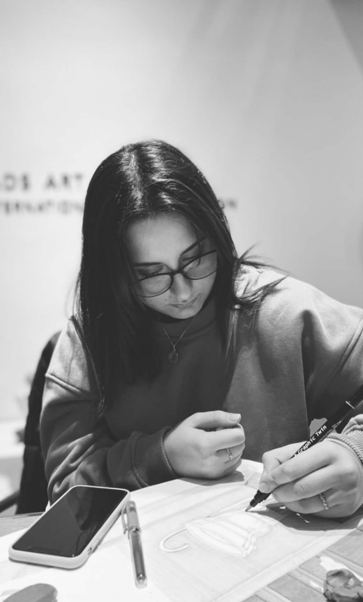

About Me
I am an Interior and Furniture Designer based in Florence, currently continuing my education at IED Firenze. The decision to move from Turkey to pursue a broader, more profound educational experience abroad has immersed me in different cultures, languages, and lifestyles, shaping both my personal worldview and design methodology.
My design practice is fundamentally rooted in sensitivity to atmosphere and emotion. I approach design as a narrative expressed through material, light, and architectural curation. I am particularly fascinated by the subtle psychological impact that tailored environments can exert on their inhabitants.
My aesthetic balances the organic, tactile warmth of the Mediterranean with a highly refined, minimal approach, aiming to create spaces that are both consciously engineered and deeply intimate. As a curious and inquisitive designer, I embrace interdisciplinary thinking and constant exploration. My ultimate ambition is to craft spaces that are not merely functional, but emotionally resonant.
Experience
Interior Design Intern
My professional and academic journey has allowed me to actively engage with both the conceptual and practical dimensions of design. By contributing to spatial planning, concept development, and technical drafting, I experienced the complete lifecycle of projects and the internal dynamics of a design firm.
Competitions & Awards
I explored material-focused design by participating in international competitions; having the opportunity to translate conceptual ideas into concrete projects strictly through furniture and surface design.
Education
My ongoing studies in Florence have allowed me to seamlessly blend Italian design traditions and production methodologies with modern architectural practices.
Skills & Interests
Software
- Rhino & Cinema4D
- Corona & V-Ray
- 3ds Max
- AutoCAD
- Adobe Creative Cloud
Interests
Ceramic arts, sculpture, contemporary art history, material science, and curatorial practices. Interacting with raw materials and understanding their innate nature constitutes the absolute starting point of my designs.